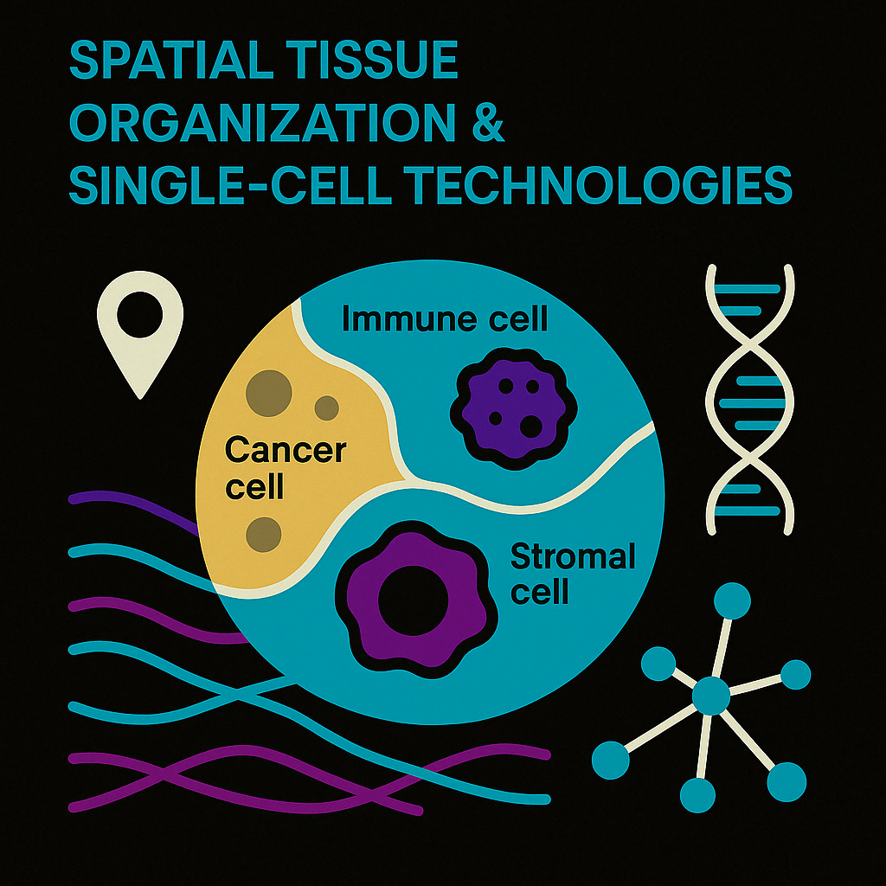
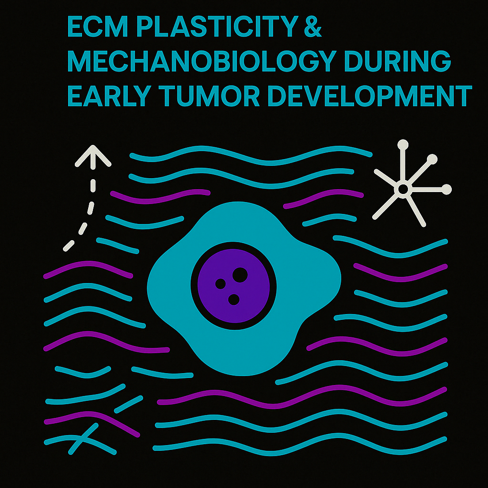
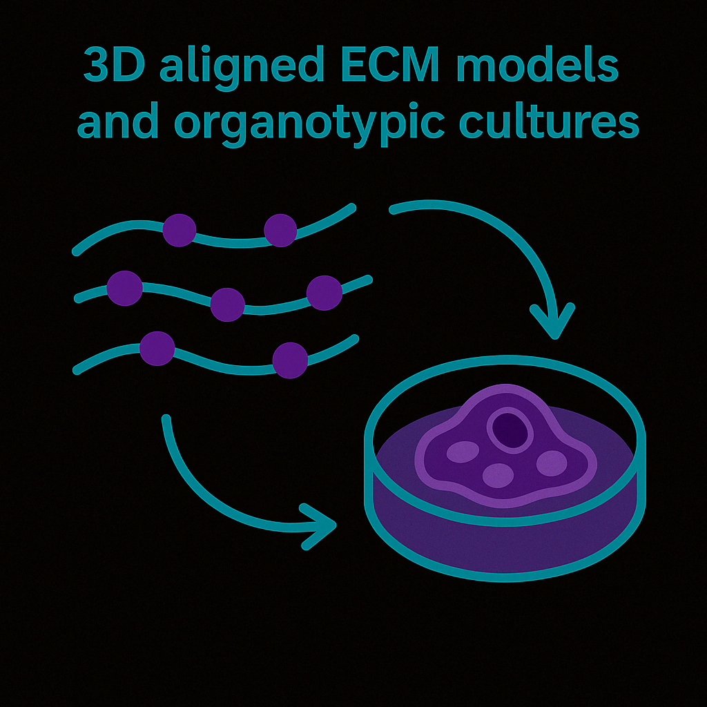
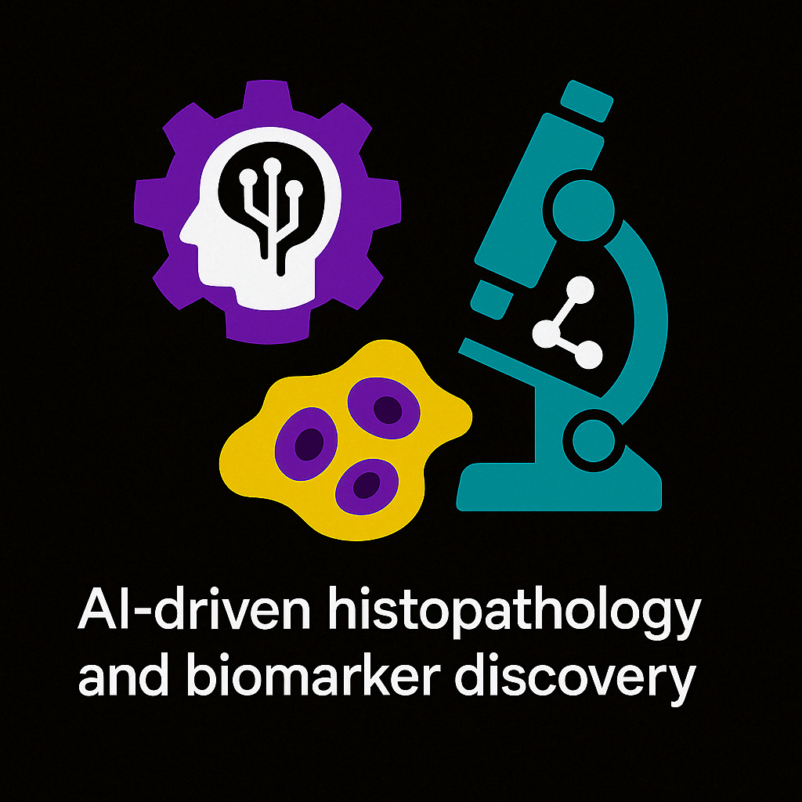
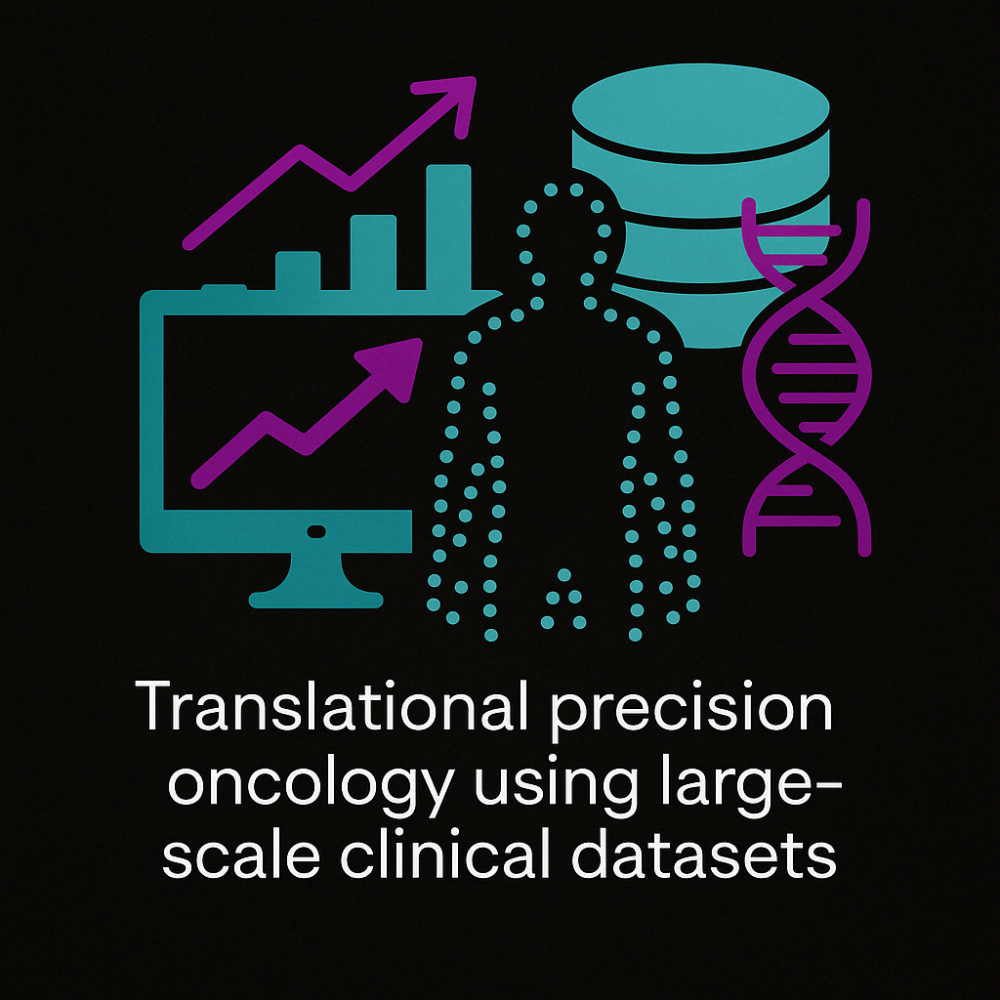

mAIques Lab · Barts Cancer Institute
About the mAIques Lab
We connect tissue architecture with cancer biology, bringing together experimental models, spatial analysis and AI.
Our lab
Established in April 2024, the mAIques Lab is led by Dr Oscar Maiques, Lecturer and Group Leader in Digital Pathology at Barts Cancer Institute, Queen Mary University of London.
We are based in the Centre for Cancer Biomarkers and Biotherapeutics. Our research investigates how the extracellular matrix and immune microenvironment influence cancer, with an emphasis on melanoma and pancreatic cancer.
Research themes





Oscar’s background
Oscar trained in Biotechnology and completed his PhD at the University of Lleida with Prof Xavier Matias-Guiu and Prof Rosa Maria Marti. He subsequently undertook postdoctoral research with Prof Victoria Sanz-Moreno across King’s College London, Barts Cancer Institute and the Institute of Cancer Research.
He established the lab through the Barts Precision Medicine Programme, with mentorship from Prof Claude Chelala and Prof Carol Dezateux and support from Barts Charity.
Institutional profile · ORCID · Google Scholar
Teaching and academic activities
Teaching and supervision
Oscar teaches spatial biology, AI, personalised medicine and digital pathology, and supervises PhD, MSc and MRes research.
He co-leads Cancer Biology and Research Skills (SSC1b, CANM938) from 2026 and is a Fellow of the Higher Education Academy.
Academic service
Oscar is a member of the British Association for Cancer Research and the European Association for Cancer Research, and the BCI delegate to the Faculty of Medicine and Dentistry Data Strategy and Capability Committee.
He contributes to tissue-bank application review, the BCI Communications Committee and the DERI Fellows Network.
Partnerships and involvement
We collaborate with Panakeia Technologies and contribute to the OPTIMA oncology network.
Patient involvement through the Pancreatic Cancer UK Research Involvement Network helps inform our research.